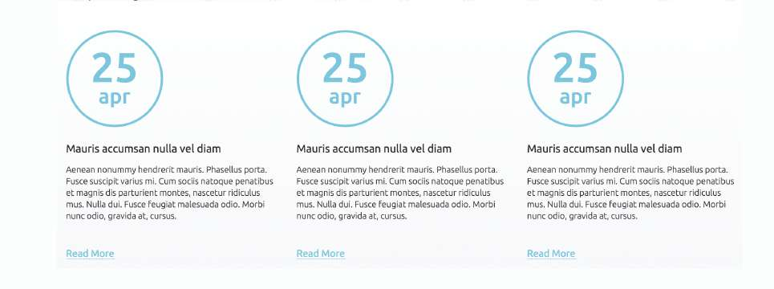

Components
Events Info

Target Audience
Designed as a modern ski resort website, the target audience for the ski resort is consumers within the upper-middle class to upper class income ranges. Primarily couples without children between the ages of 35-45 years old. Couples can have a fantasy getaway and get lost in the romantic thrills and chills of the snowy mountains. They enjoy the time spent away from their executive & high level positions and the hustle and bustle city lives back at home so they can finally get the opportunity to pamper themselves to fully enjoy the fruits of their labor.
Client's Goals and User's Needs
Getting away for a luxury vacation takes lots of planning and any hiccups or unplanned events can make a getaway feel like a disaster and result in a financial pain. The client’s goals are customer service, they want to ensure the user is well informed of any & all events happening and how to accommodate and maneuver their itinerary if needed. The user’s needs are information while hunting for the best locations to spend their money. The upper-class take good care of their financials and like to splurge when they want and not when they have to. Keeping an eye for unappealing events to avoid any frustrations.
Critique
The sans-serif font type used help cater the content to trendy young professionals living in the modern era. The subtle hints of light blue background give a feeling of cool mint which paints the picture of the icy alps, the fresh biting cold on the edge of your nose, and mint hot chocolate. The large text for the events are used for level of importance and they say, “Hey I’m an event that will be happening this day so if you are traveling here during these days— you may want to read me”. The ample white space is perfect to be seen as the dividers of elements without use of unnecessary design features.
View Component
Profile Card

Target Audience
Designed as a photographer’s website, the target audience is going to be graphic designers or web designers, primarily male, between the ages of 20 - 35. This is a website template so the user will have to know just the basics of html to know how to switch out photos and update text content. The designer will be looking for a quick solution that doesn’t cost much so they don’t break their banks and can easily integrate it into their projects.
Client's Goals and User's Needs
Client’s goal is revenue and customer service. The client realizes the need for ready-to-use website elements in this day and age with little time for error so they create website assets that are (for the most part) plug and play ready to use. The customer service comes in when the client is also showing the user the different forms in which they can combine different elements to achieve a layout or feature they might have in mind. The user’s needs are product/service; looking for a fast solution to their project that is nearing deadline and in dire need of a cheap solution that offers a lot of bells and whistles. The website template will have to be easy to integrate and be “mix-and-match” able.
Critique
Great use of the energetic and industry color orange. The chunky sans-serif fonts play really well with the bold orange color scheme. The nature photos used throughout the composition adds a natural feel that the right decision is already here. The uniform white text of various sizes establishes the information hierarchy quite well and the thin icons and link buttons the component a current modern and fresh feel.
View Component
Navigation

Target Audience
The navigation’s menu using web industry related language suggests the target audience would be mostly male between the ages of 25-35 working in the web design/web development related industry.
Client's Goals and User's Needs
The client’s goal is customer service. They are providing resources to help users accomplish their tasks. The more user’s complete tasks and interact with this company, the higher the probability of making conversions. The client is also providing options to get in touch and interact with them via their social network profiles. The users goal is to find information on the prototyping tools and their features.
Critique
The dark blood-orange color of the navigation component gives a sense of high energy, a sense of attraction to the boldness of the color. The sans-serif typeface caters to a younger and more modern user. The social links Twitter, Facebook, and LinkedIn networks show that the company “N” is up to speed, connects with consumers, and is keeping lines of communication open offering links to three different social networks. Typographical hierarchy is established through the use of white and different levels of transparent white. The logo is styled with 100% white and all the other elements are in a reduced opacity.
View Component
C.T.A. (Call To Action)

Target Audience
This CTA component is part of a prototyping tool whose target market are female small business owner’s/business decision-makers ages 30 - 40 yrs. old that are online shopping for prototyping tools.
Client's Goals and User's Needs
The clients goal is community service and community outreach. Community service is a goal by recognizing a users need of a particular service and allowing them to try it out and see if it is a service they want to use. This then ties in with Community outreach because they hope to reach as many people as possible and have their services and company promoted by word of mouth, link sharing, and social network posts by users trying the service. The user’s need is a product/service that can help speed up their creative workflow. The user is looking to try out a couple different prototyping tools and find a good fit for their design team.
Critique
A subtle background image sets the tone for CTA, starting off the feeling of strong teamwork and group collaboration. Their choice of hot pink against a cool dark background is bold and definitely grabs your attention, as the color should; hot pink is attention getting and is also used here to represent exciting, fun, and energetic. The client wants to promote their product to small businesses that are wanting to speed up their creative team’s workflow in a way that unifies them more and brings high productivity. This is why the use of uppercase widely spaced and high contrast heading in a white color really helps sell the idea. A great move by the client was a hot pink CTA and logo is a sure way to promote a brand and product as high energy and exciting to those small business owners. The use of a “more details” symbol (the “play” button) is a way to know they are targeting a generation that easily identify graphic symbols and their meanings easily and fairly quick. A clever element of design used here is shape. The downward facing arrow formed from the contrast in color, lengths of the text, and positioning helped shape the direction your focus should be going.
View Component
Search Results: Grid view

Target Audience
The target audience here is graphic designers, primarily female between the ages of 20-30 years old. She will be looking for a way to get her work noticed to land her first job out of graphic design school. Knowing some basics of HTML and CSS she can use a web application to help with the majority of the heavy code lifting and if any minor customization she can handle it herself but needs some great inspiration to help the creative juices flow. She is independent, smart, and knows her strengths and looking at other’s work really helps begin her own website.
Client's Goals and User's Needs
The clients goal is to provide good customer service by allowing the works of other designers created using this web application to be showcased. The user’s needs are information, looking for inspiration and ways to implement different ideas.
Critique
The soft and delicate light-bluish-gray background color sets the feminine tone. The grid used to align the content give the component firm and strong foundation and structure. The rounded font-type used within this composition add to the soft yet elegant look of the component.
View Component
News Accordion

Target Audience
Designed as a News website, the target audience is adolescents, primarily male ages 10-16 years old. Their minds are curious and their imagination is active and very much alive that reading about the wonders of the world only adds to their already vivid imagination. The world around them is interesting and they like to read about things they can’t physically go see just yet. Learning about it gives them a plan to do something big one day.
Client's Goals and User's Needs
The client’s goal is customer service by providing information to the user in a way that help stimulate their growth. If the users like what they read, then user’s parents/users will leave feedback for the client to use to deliver more relative and current content. The user’s needs are seeking out information about the world and the amazing things happening in a way that seems like a fiction read but be non-fictional.
Critique
The color saturation boost in each of the photos while increasing the contrast gives the images a 3-dimensional look as if the images were about to come alive or like visuals from a. The subject in each panel is given a white highlight to help identify it amongst the rest of the details. The bold white colored heading allows the user to quickly find out what the story is about and its category is easily read and noted by white text with a colored background like a tag. The interesting part is the light source coming from the first panel illuminates the other two dictating the source of light.
View Component
Quote Display
Target Audience
Designed as a hairstylists portfolio website, the target audience is female between the ages of 30-50 years old. In order to show how important, it is to have a hairdresser is to display a quote by someone famous and well respected saying how much they need a hairdresser. That said, this quote was given by the Oscar winning Film & T.V. actress, Joan Crawford. Someone that a current generation wouldn’t know unless they watched old classic movies.
Client's Goals and User's Needs
The client’s goal is to promote his services to a specific consumer within a community (Community Outreach). Since a hairdresser/hairstylist can only sell services they can personally do, it limits the reach they can get.
Critique
The flowing yet smooth look and feel of this component comes from the harmony of the background photo and elegant font choice. The strong contrast against the background gives it precedence but just enough for the user to admire the swooping curls of hair dancing behind it. Keeping the font with ample whitespace and line-height is important to pull this look off but careful because too much will make it seem disconnected.
View Component
Top Picks

Target Audience
The target audience is newlyweds or singles, primarily young professional females between the ages of 30 to 35 years old looking to find travel packages for her honeymoon/party vacation spot. The destination packages are priced in the high-range which suggest that she is within the middle to upper middle income levels.
Client's Goals and User's Needs
client's goal is revenue. Driving the point home that this is the client’s goal is evident from the placing of the price above the description. The user’s need is information on best travel packages price for two. Having had their wedding paid for by their parents had a higher budget than expected but no good deal when they see one.
Critique
To reflect the client’s goal, the price is placed strategically first after the photo of the destination and it’s given a bright color and set in bold to contrast against the white background and black body text. The colors used for the prices match the CTA; This is a great way to show the relationship between them: if you like the price find out more about it by clicking the link below. The modern and monotone main heading is down played in a dark classic black. This allows for the real attention getter to shine (photos, price, and price breakdown).
View Component
Newsletter Sign-Up

Target Audience
Planner website the target audience is female ages 25 to 35 years old. Making all plans/decisions for her big day wedding is very time consuming and a full-time job. She needs all the help she can get when she already has a full time job as well.
Client's Goals and User's Needs
The client's goal is customer service by providing the user with up-to-date information on available venues save the date ideas deals they themselves offer and more. The user's need is looking to get all the info and help she can get. Signing up for a newsletter that will be providing helpful inforation, such as tips and tricks, wedding specials, save the date ideas, etc., is a way to help stay on top of things and relieve a lot of stress.
Critique
A “no-brainer” 1 input field newsletter sign-up is perfect for this bride’s scenario. The form is catering to the bride’s constricting time schedule and rushed frame of mind to allow for a stress free and worry-free experience. The picture perfect photo of the couple in the background allows the bride to feel at ease, positive, and focused. The simplicity of the sans-serif typeface brings elegance and sophistication to the style of the component. The user not only feels calm and collected she’ll be more than content to commit… I mean submit.
View Component
Footer

Target Audience
Designed as a hair extensions website, the target audience is cosmetologists, primarily female between the ages of 30-40 years old. They have clients booked at a certain time and generally have a limited time to shop.
Client's Goals and User's Needs
The client’s goal is customer service, providing resource links, easy access to finding exactly what the users are looking for in an organized and easy to read set of lists. The user’s need is information on the quality, price, and quantity of hair extensions they can find.
Critique
The classic color of white symbolizes purity and clean—a good choice when talking about hair extensions. The serif typeface used for the heading has a strong contrast against the sans-serif list of links. A deep rich purple gives the component a feminine charm wile retaining its firm authoritative overall mood.
View Component